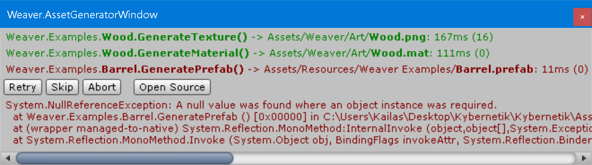

Once you have defined a procedural asset (or made changes to an existing one), you need to generate it - either using the [G] button next to the asset in the Procedural Assets panel of the Weaver Window or by right clicking on the asset's overlay icon in the Project Window and using the Generate command.
- The
[G]button has different effects depending on which mouse button you use:- Left Click = generate the target asset (and any of its Dependencies).
- Right Click = generate all procedural assets in the same namespace as the target asset.
- Middle Click = generate all procedural assets.
- When you generate procedural assets, a popup displays a list of all assets being generated.
- After each asset is generated, the time it took to generate and save it is shown (measured in milliseconds), followed by the time it took to generate. So an asset that shows “100ms (10)” took 10 milliseconds to execute the asset generator method itself, and a total of 100 milliseconds for the entire generation and saving process.
- The window will close automatically when done unless you hold
Shiftas it finishes.
Procedural Assets Panel
The Procedural Assets panel in the Weaver Window shows a field for each procedural asset in your project. The fields are grouped according to their namespace.
It also shows the following options:
| Option | Description |
|---|---|
| Output Directory | The directory in which new procedural assets are initially saved. After being saved the first time, regenerating an asset will continue to overwrite the existing one, even if you move it somewhere else in the project. |
| Include Namespace in Name | If enabled: newly created procedural assets will be named according to their Namespace.DeclaringType.Member. Otherwise the Namespace will be omitted. |
| Check For Missing Assets | If enabled: Weaver will notify you when entering play mode or starting a build if there are any procedural assets that haven't yet been generated. |
| Auto Generate On Build | If enabled: all procedural assets will automatically be generated when starting a build. You can disable this feature for a specific asset by setting AutoGenerateOnBuild = false in the [ProceduralAsset] attribute's constructor. |
| Notify When Deleting Old Assets | If enabled: the system will notify you whenever regenerating a procedural asset list deletes an old asset. |
| Use Weaver Namespace | If enabled: procedural scripts will be put inside the Weaver namespace by default. |
| Auto Generate On Save | If enabled: saving the scene or project will automatically regenerate any procedural scripts that need to change. |
| Notify When Generating | If enabled: a message will be logged whenever a procedural script is generated. |
| Keep Obsolete Members | If enabled: procedural scripts will keep their old members when regenerating and mark them as [Obsolete] until you build instead of simply removing them. |
| Asset Generators | A foldout which lists the details of every Asset Generator currently in your project. |
Exceptions
If an exception is thrown by any of the assets being generated, it stops generating and shows the offending asset in red along with the exception details and buttons to Retry, Skip, Abort, or open the source file which threw the exception.
Internal Process
Weaver executes the following process to generate each Procedural Asset:
- Create a new temporary scene so that the current scene isn’t accidentally modified.
- Determine the correct Asset Generator to use for the asset based on its type.
- Invoke the generator method using that Asset Generator.
- Either overwrite the existing asset if there was one or save the generated object as a new asset in the
Output Directoryspecified in the Weaver Window. - Close the temporary scene and return to the original scene setup.